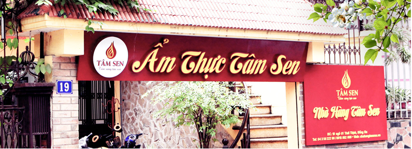
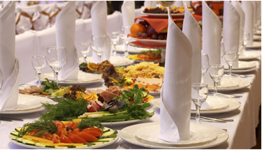
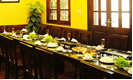
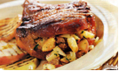
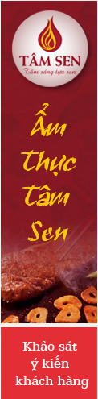

LIÊN HỆ HOTLINE
04 113 911


Ngày nay vật lí trị liệu đã trở thành thuật ngữ quen thuộc với tất cả mọi người

Tiêu chuẩn VTOS nghiệp vụ nhà hàng
Cách lột vỏ tôm nhanh chóng bằng muỗng và nĩa
Cách lột vỏ tôm nhanh chóng bằng muỗng và nĩa


Về tâm sen
Để lại, thế hệ con cháu chúng tôi lại tiếp bước ông cha gìn giữ nghề và bảo tồn truyền thống, với độ ngũ nhân viên có tay nghề khéo léo, cộng thêm sự phát triển của công nghiệp hóa, đến nhà hàng Khoảng lặng Hương Sen số: 17-19/ngõ 61 Thái Thịnh luôn cho ta những sản phẩm làm hài lòng quý khách, đặc biệt cờ quốc kì của các nước trên thế giới,..
DỊCH VỤ

Dịch vụ 1
Dịch vụ 2
Dịch vụ 3
KHỎE NGON

Từ lâu chè đậu xanh táo đỏ đã được biết đến như một món ăn bổ dưỡng,...
Từ lâu chè đậu xanh táo đỏ đã được biết đến như một món ăn bổ dưỡng,...
Từ lâu chè đậu xanh táo đỏ đã được biết đến như một món ăn bổ dưỡng,...
KINH NGHIỆM
Từ lâu chè đậu xanh táo đỏ đã được biết đến như một món ăn bổ dưỡng,...
Từ lâu chè đậu xanh táo đỏ đã được biết đến như một món ăn bổ dưỡng,...
Từ lâu chè đậu xanh táo đỏ đã được biết đến như một món ăn bổ dưỡng,...
MÓN NGON MỖI NGÀY
Từ lâu chè đậu xanh táo đỏ đã được biết đến như một món ăn bổ dưỡng,...
Từ lâu chè đậu xanh táo đỏ đã được biết đến như một món ăn bổ dưỡng,...
Từ lâu chè đậu xanh táo đỏ đã được biết đến như một món ăn bổ dưỡng,...
